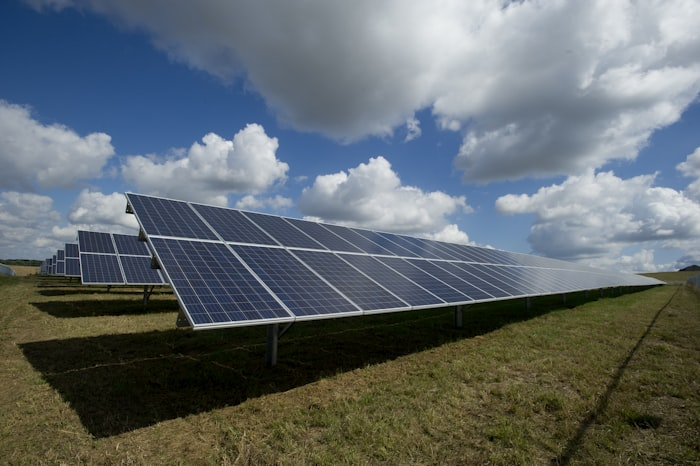
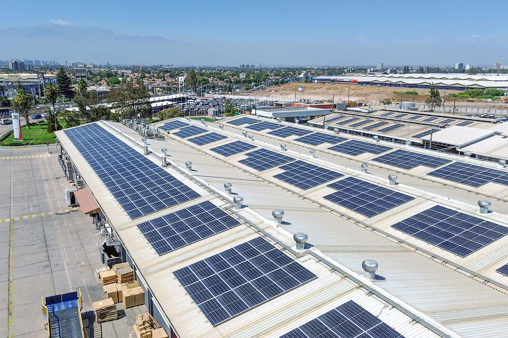
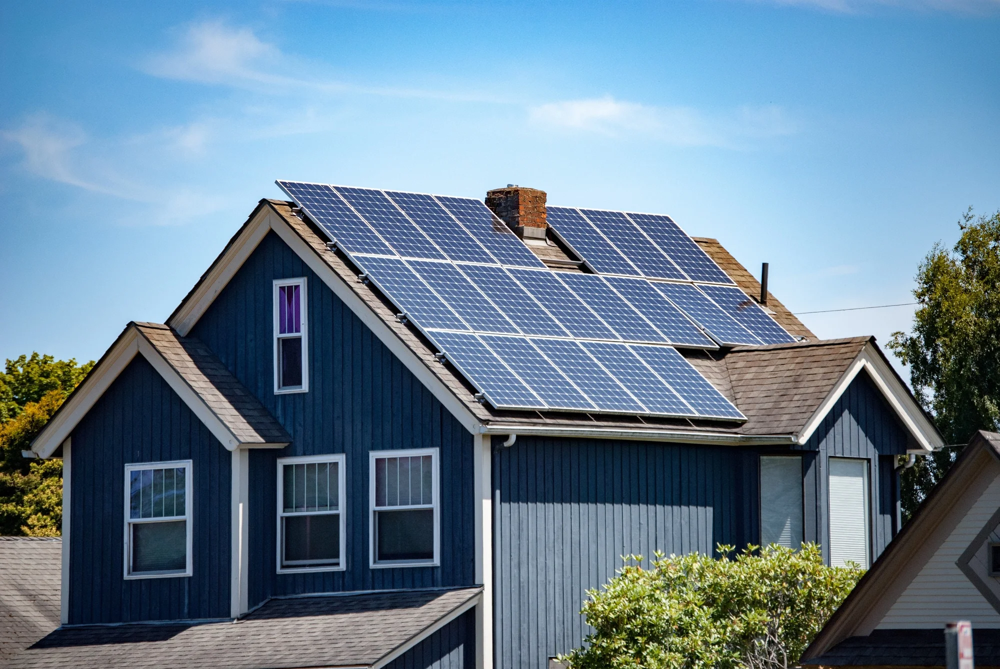

SERVICES / SOLAR
Drone cleaning for solar installations
For asset owners, EPCs and O&M teams, the case is arithmetic: measure soiling loss, estimate yield recovery and compare it with the cost of cleaning.
Illustrative solar image · Video to be supplied
The incumbent
Manual brushes and squeegees require roof access and repeated labour.
Dust and bird residue can reduce output, but the cleaning decision should be based on the value of recovered yield—not a generic schedule.
The Altitude approach

Clean for yield. Prove the economics.
No foot traffic on modules
The drone reaches suitable arrays without cleaners walking across the panels.
ROI-led scheduling
Use soiling loss and energy value to decide when a clean pays back.
Controlled pure-water rinse
RO + DI water helps limit mineral residue, subject to module manufacturer guidance.
Side-by-side
| Metric | Manual roof cleaning | Altitude Robotics |
|---|---|---|
| Incumbent method | Manual brush / squeegee crews with roof access | Ground-operated drone rinse |
| Cost per m² | Roof access + manual labour priced into the clean | Site-priced after survey; repeat cleaning can reduce access overhead |
| Mobilisation | Roof access, manual equipment and worker movement plan | Ground system + array work zone |
| Operational downtime | Coordinated around rooftop access and O&M controls | Planned with O&M; cleaning zones are sequenced around the array |
| People at height | Roof crew required | 0 for areas cleaned by drone |
We only publish operating numbers we can validate. Cost per m², site duration and weather limits are confirmed in the quotation after survey.
SOLAR ROI CALCULATOR
Put a value on recovered yield.
Use your own production and energy-value data. Results are illustrative.
Estimate only. Actual output depends on irradiance, soiling pattern, system losses, cleaning timing and measured post-clean performance.
Typical arrays

SCOPE
What is included
- Arrays: commercial & industrial rooftops and suitable ground-mounted installations.
- Soiling: dust, pollen, bird residue and loose surface contamination.
- Included: module guidance review, cleaning plan, controlled rinse and visual QA.
OPERATING LIMITS
What we will not force
- No cleaning method is used outside the module manufacturer or O&M requirements.
- Cracked, loose or visibly damaged modules are flagged rather than cleaned aggressively.
- Hard mineral scale, paint, cement or bonded deposits may require a different method.
- Unsafe wind, rain, lightning, unsuitable module temperature or poor flight clearances stop work.
From survey to handover
Review array layout, annual yield data, tariff/value of energy and O&M requirements.
Assess soiling and confirm manufacturer-compatible cleaning method.
Prepare work zone, permissions and cleaning sequence.
Clean the array in controlled sections.
QA review; compare visual condition and available performance data.
DELIVERABLE
A clean plus a usable site record.
- Before / after imagery
- Coverage map by array / roof section
- Soiling and yield inputs used for the cleaning ROI estimate
Yield recovery is site-specific. The calculator is an estimate, not a performance guarantee.
Common questions
Will cleaning increase electricity output?
Removing soiling can recover some lost output. The actual improvement depends on the array, deposits and operating conditions.
How often should panels be cleaned?
When the expected value of recovered yield justifies the cleaning cost, subject to O&M requirements and site conditions.
Is drone cleaning suitable for every module?
No. We check module guidance, condition, spray requirements and array geometry before confirming the method.
Get a quote now!
Share your array size, annual generation, tariff or energy value and current soiling data for an ROI-led assessment.